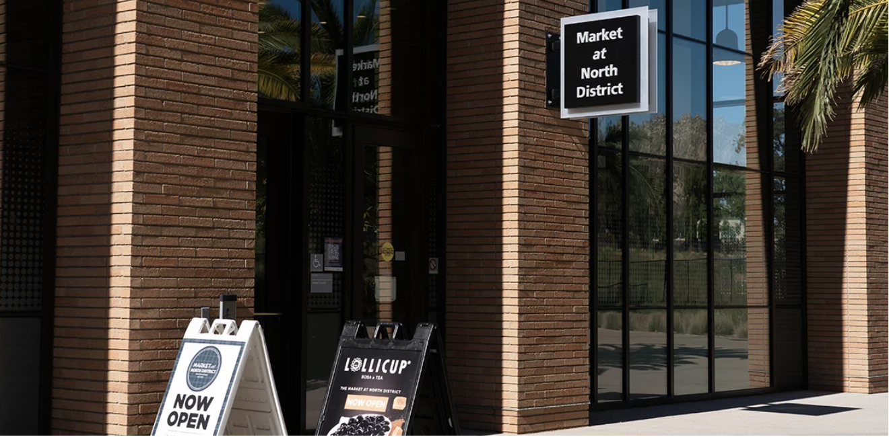
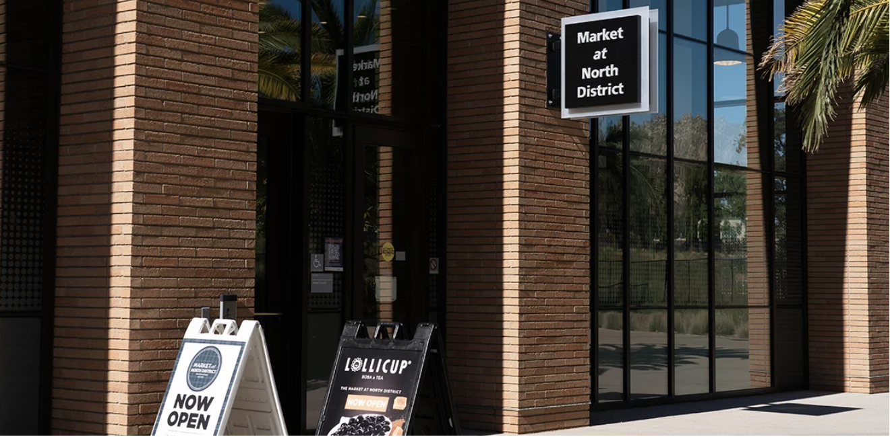

Daniella Lau
Hello, my name is Daniella Lau and I am currently an English and Creative Writing major at UC Riverside. Welcome to my page! I am a second year at Riverside and have taken multiple English and literature courses relating to my major. Though I don't have any professional experience, I often proofread essays for my friends and family. I have also recently joined a club centered around editing and publishing submitted works from all around. Oftentimes though, I will write for myself and the people around me. I believe writing can bring people together. I have a huge love for writing and I hope to become an author one day in the future. I love fantasy novels and I remember reading through dozens of "chosen hero" stories as a child, and imagining myself in their shoes. The books I read as a child will always hold a special place in my heart, and I want to replicate that feeling for other children all around the world.
Besides reading and writing, I love spending time with people at my club and building strong connections with others. I currently work as a cashier and though it can be exhausting at times, it is so interesting to interact with such diverse groups of people as they all gather together over one common need: food. From being a cashier, I have adapted many communication skills and workarounds when things get complicated with a customer. There are many unpleasant instances that I would have rather avoided but overall, I will always appreciate the experiences I have gained from meeting different types of people. I also enjoy volunteering at events where I am able to meet new people. I believe building connections is so important, so when I see an opportunity, I rush to volunteer and help out in any way I can.
I only recently started sharing my work with people outside of my small circle and there have been many ups and downs. I took a workshop course recently where we are tasked to share our nonfiction works in order to receive feedback on it. Nonfiction is something I hold very personally, so I was hesitant to share it at first. However, my fellow peers in that workshop approached the subject completely judgement free and offered critiques in an unbiased light. If any of that was interesting to you, please join me as I navigate life and improve myself as a writer both creatively and professionally!
Experience
Cashier
• Greeted customers as they walked into the restaurant
• Provided excellent and friendly service to ordering customers
• Helped keep the shop environment tidy and clean
• Restocked when any food items, condiments, utensils, etc were running low
Cashier/Bobarista
• Helped customers check out their purchase
• Kept the store environment clean and tidy
• Made boba/smoothie/tea drinks
Retail Associate
• Helped keep the store tidy by folding and fixing clothes and color coordinating them
• Interacted with customers personally in order to see what they needed
• Checked out customer purchases
• Did inventory for the clothing items in back of the store
Education
UC Riverside
Portfolio



